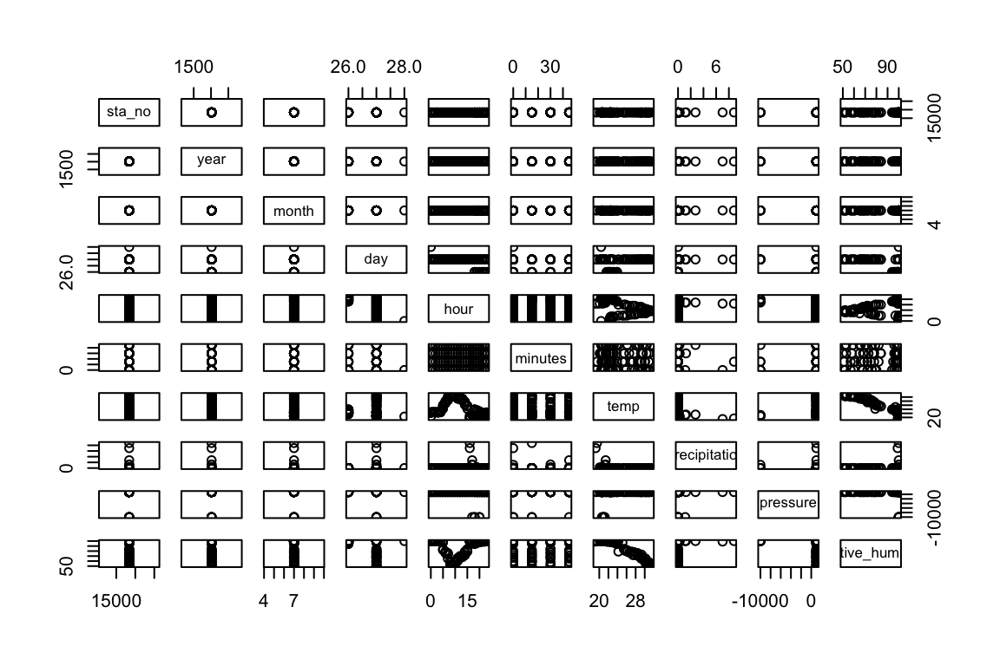
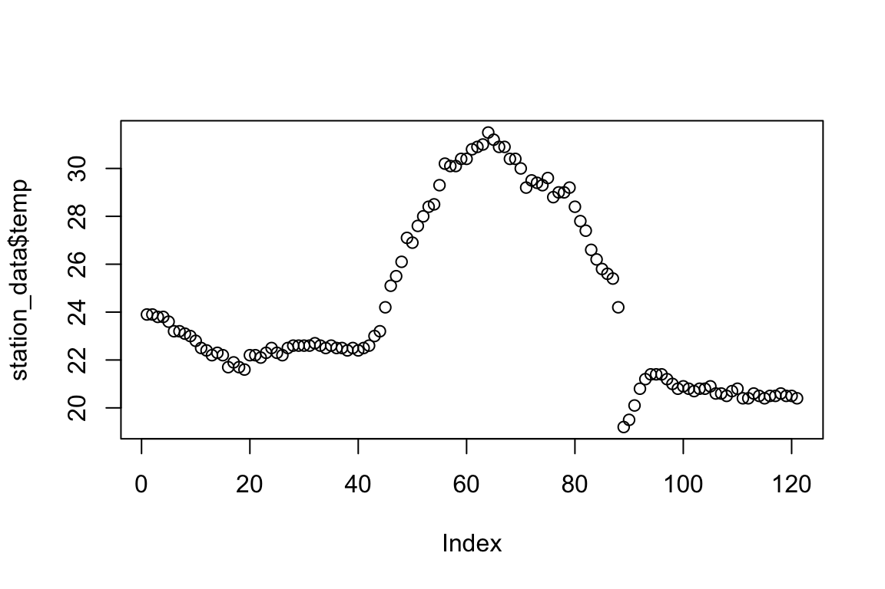
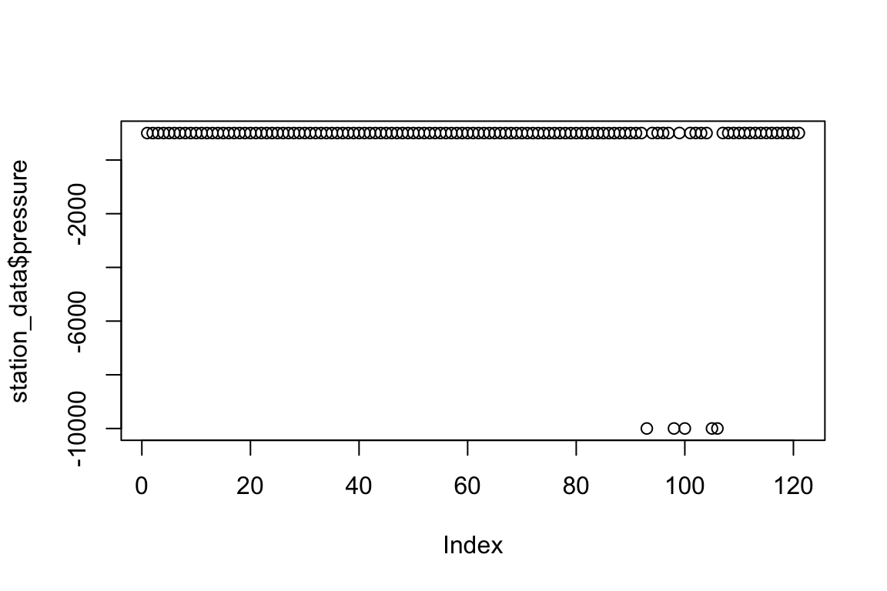
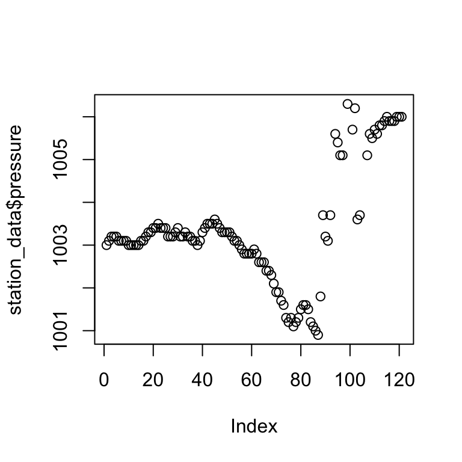
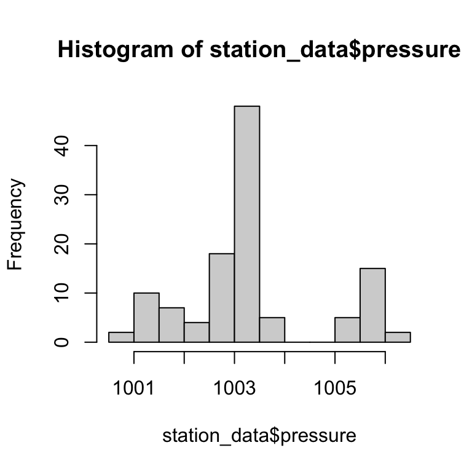
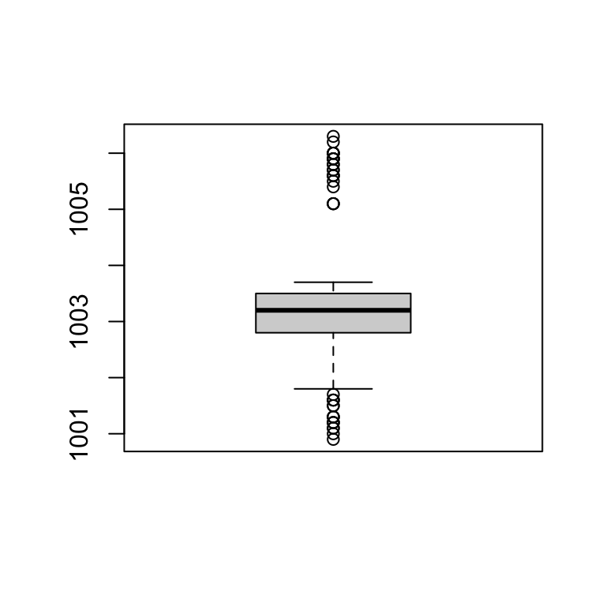
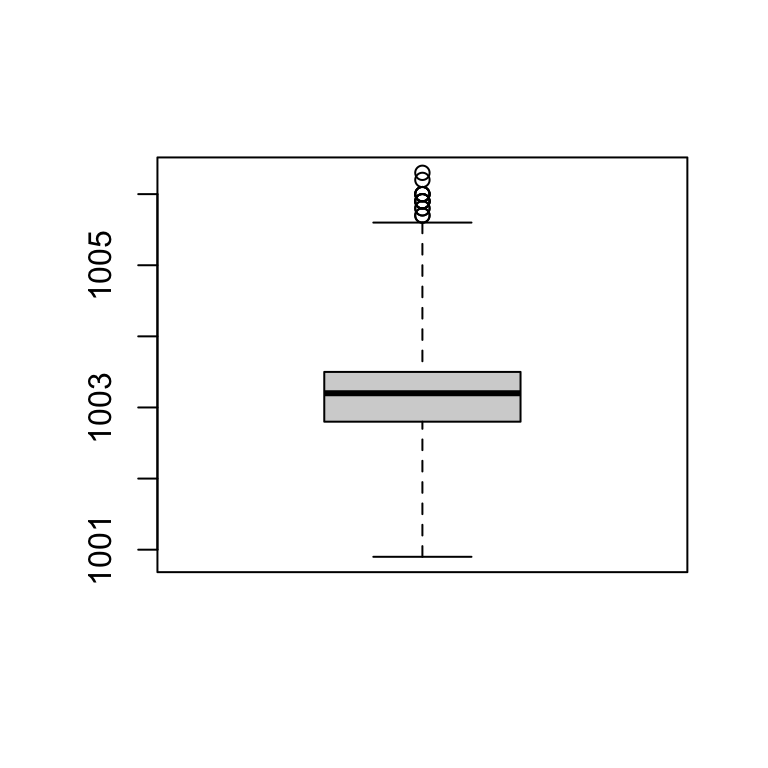
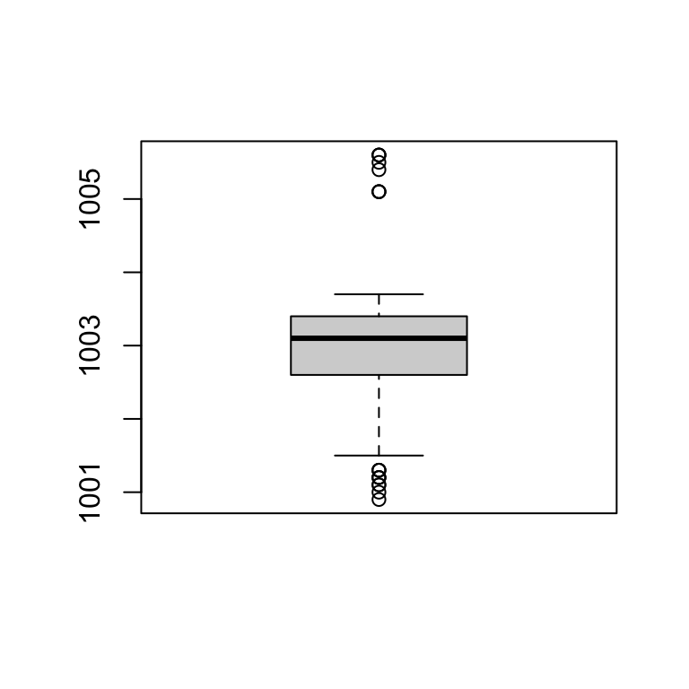
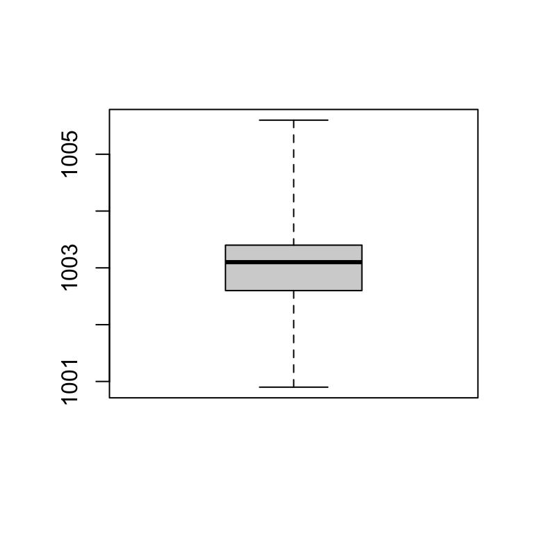

R Statistics
1. R Elemantary Statistics
2. Basic Data Visualization
R Elemantary Statistics


Centrality: Mean, Median, Mode
- Measures of centrality are commonly used to explain large collections of data by describing where numeric observations are centered.

Centrality: Mean, Median, Mode
- Median : “middle magnitude” of your observations

0 . 0 . 0 . 0 . 0
o . o . o . o . o . o
Centrality: Mean, Median, Mode
- Mode : Simply the “most common” observation.
Sample : 2 , 4.4 , 3 , 3 , 2 , 2.2 , 2 , 4


2 , 2 , 2 , 2.2 , 3 , 3 , 4, 4.4 ( n=8 , n/2 = 4)

Centrality: Mean, Median, Mode
xdata <- c(2,4.4,3,3,2,2.2,2,4)
- mean(xdata)
- median(xdata)
- min(xdata)
- max(xdata)
- range(xdata)
- table(xdata)
Quantiles, Percentiles, and the Five-Number Summary
- A quantile is a value indicates an observation rank when compared to all the other present observations.
- For example, the median is itself a quantile. It’s the 0.5th quantile.
- Alternatively, quantiles can be expressed as a percentile.
The median = the 0.5th quantile = The 50th percentile
Sample : 2 , 4.4 , 3 , 3 , 2 , 2.2 , 2 , 4 ( n=8 , n/2 - 1 = 3, n/2 = 4)
Sort : 2 , 2 , 2 , 2.2 , 3 , 3 , 4, 4.4
0.5th quantile = median = 2.6
Quantiles, Percentiles, and the Five-Number Summary
xdata <- c(2,4.4,3,3,2,2.2,2,4)
quantile(xdata,prob=0.8) # the 0.8th quan- tile (or 80th percentile)## 80%
## 3.6quantile(xdata,prob=c(0,0.25,0.5,0.75,1))## 0% 25% 50% 75% 100%
## 2.00 2.00 2.60 3.25 4.40summary(xdata) # A quartile is a type of quantile.## Min. 1st Qu. Median Mean 3rd Qu. Max.
## 2.000 2.000 2.600 2.825 3.250 4.400Quantiles, Percentiles, and the Five-Number Summary

A quartile is a type of quantile.
Spread: Variance, Standard Deviation, and the Interquartile Range
- How dispersed your data are. For this, measures of spread are needed.
xdata <- c(2,4.4,3,3,2,2.2,2,4)
ydata <- c(1,4.4,1,3,2,2.2,2,7)
mean(xdata)## [1] 2.825mean(ydata)## [1] 2.825plot(xdata,type="n",xlab="values",ylab="data vector",yaxt="n",bty="n", xlim = c(0,7) )
abline(h=c(2.5,3),lty=2,col="red")
abline(v=2.825,lwd=2,lty=3)
text(c(0.0,0.0),c(2.5,3),labels=c("x","y"))
text(c(2.825),c(4),labels=c("mean"))
points(jitter(c(xdata,ydata)),c(rep(2.5,length(xdata)), rep(3,length(ydata))))
the observations in ydata are more “spread out”
Spread: Variance, Standard Deviation, and the Interquartile Range
- The sample variance measures the degree of the spread of numeric observations around their arithmetic mean.


Spread: Variance, Standard Deviation, and the Interquartile Range
2 , 4.4 , 3 , 3 , 2 , 2.2 , 2 , 4 ( mean = 2.825)

Spread: Variance, Standard Deviation, and the Interquartile Range
- The standard deviation is simply the square root of the variance. The scale of the original observations.


0.953 represents the average distance of each observation from the mean
Spread: Variance, Standard Deviation, and the Interquartile Range,
- Unlike the variance and standard deviation, the interquartile range (IQR) is not computed with respect to the sample mean.

- IQR is computed as the difference between the upper and lower quartiles of your data
Spread: Variance, Standard Deviation, and the Interquartile Range
xdata <- c(2,4.4,3,3,2,2.2,2,4)
var(xdata)## [1] 0.9078571sd(xdata)## [1] 0.9528154IQR(xdata)## [1] 1.25


Covariance and Correlation
- Investigate the relationship between two numeric variables to assess trends
- The covariance expresses how much two numeric variables “change together” and the nature of that relationship, whether it is positive or negative.

Covariance and Correlation
x = {x1,x2,…,xn}
y = {y1,y2,…,yn}
for i = 1,. . . ,n

When you get a positive result for rxy, it shows that there is a positive lin- ear relationship. When rxy = 0, this indicates that there is no linear relationship.
Covariance and Correlation
x = {2,4.4,3,3,2,2.2,2,4}
y = {1,4.4,1,3,2,2.2,2,7}
mean x and y = 2.825

positive relationship
Covariance and Correlation
- Correlation allows you to interpret the covariance further by identifying the strength of any association.

Covariance and Correlation
Most common of these is Pearson’s product-moment correlation coefficient. (R default)
The correlation coefficient estimates the nature of the linear relationship between two sets of observations

−1 ≤ ρxy ≤ 1
ρxy = 1, which is a perfect positive linear relationship
Covariance and Correlation
x = {2,4.4,3,3,2,2.2,2,4}
y = {1,4.4,1,3,2,2.2,2,7}
(mean x and y = 2.825)
(sx = 0.953 and sy = 2.013)
(rxy = 1.479)

ρxy is positive
Covariance and Correlation
xdata <- c(2,4.4,3,3,2,2.2,2,4)
ydata <- c(1,4.4,1,3,2,2.2,2,7)
cov(xdata,ydata)## [1] 1.479286cor(xdata,ydata)## [1] 0.7713962Covariance and Correlation
xdata <- c(2,4.4,3,3,2,2.2,2,4)
ydata <- c(1,4.4,1,3,2,2.2,2,7)
plot(xdata,ydata,pch=13,cex=1.5)


Basic Data Visualization
Barplots and Pie Charts
file_url = "https://web.itu.edu.tr/~tokerem/18397_Cekmekoy_Omerli_15min.txt"
station_data <- read.csv(file_url, header=T, sep = ";")
head(station_data)## sta_no year month day hour minutes temp precipitation pressure
## 1 18397 2017 7 26 18 0 23.9 0 1003.0
## 2 18397 2017 7 26 18 15 23.9 0 1003.1
## 3 18397 2017 7 26 18 30 23.8 0 1003.2
## 4 18397 2017 7 26 18 45 23.8 0 1003.2
## 5 18397 2017 7 26 19 0 23.6 0 1003.2
## 6 18397 2017 7 26 19 15 23.2 0 1003.1
## relative_humidity
## 1 94
## 2 95
## 3 96
## 4 96
## 5 96
## 6 97Barplots and Pie Charts
head(station_data$temp)## [1] 23.9 23.9 23.8 23.8 23.6 23.2barplot(station_data$temp)
Barplots and Pie Charts
table(station_data$temp)##
## 19.2 19.5 20.1 20.4 20.5 20.6 20.7 20.8 20.9 21 21.2 21.4 21.6 21.7 21.9 22.1
## 1 1 1 4 6 4 2 6 2 1 2 3 1 2 1 1
## 22.2 22.3 22.4 22.5 22.6 22.7 22.8 23 23.1 23.2 23.6 23.8 23.9 24.2 25.1 25.4
## 5 3 3 8 7 1 1 2 1 3 1 2 2 2 1 1
## 25.5 25.6 25.8 26.1 26.2 26.6 26.9 27.1 27.4 27.6 27.8 28 28.4 28.5 28.8 29
## 1 1 1 1 1 1 1 1 1 1 1 1 2 1 1 2
## 29.2 29.3 29.4 29.5 29.6 30 30.1 30.2 30.4 30.8 30.9 31 31.2 31.5
## 2 2 1 1 1 1 2 1 4 1 3 1 1 1f_temp <- table(station_data$temp)Barplots and Pie Charts
barplot(f_temp)
Barplots and Pie Charts
barplot(f_temp,beside=TRUE,horiz=TRUE,las=1,
main="Frequency of Station Temperature",
names.arg=c("T"),legend.text=c("TEMP-f"),
args.legend=list(x="bottomright"))
Barplots and Pie Charts
library(ggplot2)
qplot(factor(station_data$temp),geom="bar")
Barplots and Pie Charts
head(station_data$precipitation)
pie(table(station_data$precipitation),labels=c("V1","V2","V3","V4","V5"),col=c("white","blue","green","orange"),main="pie chart for precipitation")
Histogram
hist(station_data$temp)
Histogram
hist(station_data$tem,breaks=seq(19,32,1),col="green",main="Temp",xlab="HP")
abline(v=c(mean(station_data$temp),median(station_data$temp)), col=c("blue","red"),lty=c(2,3),lwd=2)
legend("topright",legend=c("mean T","median T"),lty=c(2,3),lwd=2,col=c("blue","red"))
Histogram
qplot(station_data$temp,geom="blank",main="Temp Hist",xlab="Temp")+
geom_histogram(color="black",fill="white",breaks=seq(19,32,1),closed="right") +
geom_vline(mapping=aes(xintercept=c(mean(station_data$tem), median(station_data$tem)), linetype=factor(c("mean","median"))) , col=c("blue","red"),show.legend=TRUE)+
scale_linetype_manual(values=c(2,3)) +
labs(linetype="")
Boxplot
boxplot(station_data$temp)
Boxplot

Scatter Plots
plot(station_data$temp,station_data$relative_humidity)
Scatter Plots
head(station_data[,7:10])## temp precipitation pressure relative_humidity
## 1 23.9 0 1003.0 94
## 2 23.9 0 1003.1 95
## 3 23.8 0 1003.2 96
## 4 23.8 0 1003.2 96
## 5 23.6 0 1003.2 96
## 6 23.2 0 1003.1 97library("GGally")## Registered S3 method overwritten by 'GGally':
## method from
## +.gg ggplot2ggpairs(station_data[,7:10],axisLabels="internal")
Practice
1- Read the data
2- Plot the data
3- Find the outliers
4- Remove the outliers
Read
file_url = "https://web.itu.edu.tr/~tokerem/18397_Cekmekoy_Omerli_15min.txt"
station_data <- read.csv(file_url)
station_data## sta_no.year.month.day.hour.minutes.temp.precipitation.pressure.relative_humidity
## 1 18397;2017;7;26;18;0;23.9;0;1003;94
## 2 18397;2017;7;26;18;15;23.9;0;1003.1;95
## 3 18397;2017;7;26;18;30;23.8;0;1003.2;96
## 4 18397;2017;7;26;18;45;23.8;0;1003.2;96
## 5 18397;2017;7;26;19;0;23.6;0;1003.2;96
## 6 18397;2017;7;26;19;15;23.2;0;1003.1;97
## 7 18397;2017;7;26;19;30;23.2;0;1003.1;97
## 8 18397;2017;7;26;19;45;23.1;0;1003.1;98
## 9 18397;2017;7;26;20;0;23;0;1003.1;98
## 10 18397;2017;7;26;20;15;22.8;0;1003;98
## 11 18397;2017;7;26;20;30;22.5;0;1003;98
## 12 18397;2017;7;26;20;45;22.4;0;1003;99
## 13 18397;2017;7;26;21;0;22.2;0;1003;99
## 14 18397;2017;7;26;21;15;22.3;0;1003;99
## 15 18397;2017;7;26;21;30;22.2;0;1003.1;99
## 16 18397;2017;7;26;21;45;21.7;0;1003.1;99
## 17 18397;2017;7;26;22;0;21.9;0;1003.2;99
## 18 18397;2017;7;26;22;15;21.7;0;1003.3;99
## 19 18397;2017;7;26;22;30;21.6;0;1003.3;99
## 20 18397;2017;7;26;22;45;22.2;0;1003.4;100
## 21 18397;2017;7;26;23;0;22.2;0;1003.4;100
## 22 18397;2017;7;26;23;15;22.1;0;1003.5;100
## 23 18397;2017;7;26;23;30;22.3;0;1003.4;100
## 24 18397;2017;7;26;23;45;22.5;0;1003.4;100
## 25 18397;2017;7;27;0;0;22.3;0;1003.4;100
## 26 18397;2017;7;27;0;15;22.2;0;1003.2;100
## 27 18397;2017;7;27;0;30;22.5;0;1003.2;100
## 28 18397;2017;7;27;0;45;22.6;0;1003.2;100
## 29 18397;2017;7;27;1;0;22.6;0;1003.3;100
## 30 18397;2017;7;27;1;15;22.6;0;1003.4;100
## 31 18397;2017;7;27;1;30;22.6;0;1003.2;100
## 32 18397;2017;7;27;1;45;22.7;0;1003.2;100
## 33 18397;2017;7;27;2;0;22.6;0;1003.3;100
## 34 18397;2017;7;27;2;15;22.5;0;1003.2;100
## 35 18397;2017;7;27;2;30;22.6;0;1003.2;100
## 36 18397;2017;7;27;2;45;22.5;0;1003.1;100
## 37 18397;2017;7;27;3;0;22.5;0;1003.1;100
## 38 18397;2017;7;27;3;15;22.4;0;1003;100
## 39 18397;2017;7;27;3;30;22.5;0;1003.1;100
## 40 18397;2017;7;27;3;45;22.4;0;1003.3;100
## 41 18397;2017;7;27;4;0;22.5;0;1003.4;100
## 42 18397;2017;7;27;4;15;22.6;0;1003.5;100
## 43 18397;2017;7;27;4;30;23;0;1003.5;100
## 44 18397;2017;7;27;4;45;23.2;0;1003.5;100
## 45 18397;2017;7;27;5;0;24.2;0;1003.6;100
## 46 18397;2017;7;27;5;15;25.1;0;1003.5;97
## 47 18397;2017;7;27;5;30;25.5;0;1003.4;84
## 48 18397;2017;7;27;5;45;26.1;0;1003.3;82
## 49 18397;2017;7;27;6;0;27.1;0;1003.3;79
## 50 18397;2017;7;27;6;15;26.9;0;1003.3;78
## 51 18397;2017;7;27;6;30;27.6;0;1003.3;78
## 52 18397;2017;7;27;6;45;28;0;1003.2;76
## 53 18397;2017;7;27;7;0;28.4;0;1003.1;76
## 54 18397;2017;7;27;7;15;28.5;0;1003.1;75
## 55 18397;2017;7;27;7;30;29.3;0;1003;73
## 56 18397;2017;7;27;7;45;30.2;0;1002.9;65
## 57 18397;2017;7;27;8;0;30.1;0;1002.8;57
## 58 18397;2017;7;27;8;15;30.1;0;1002.8;60
## 59 18397;2017;7;27;8;30;30.4;0;1002.8;53
## 60 18397;2017;7;27;8;45;30.4;0;1002.8;52
## 61 18397;2017;7;27;9;0;30.8;0;1002.9;51
## 62 18397;2017;7;27;9;15;30.9;0;1002.8;51
## 63 18397;2017;7;27;9;30;31;0;1002.6;50
## 64 18397;2017;7;27;9;45;31.5;0;1002.6;53
## 65 18397;2017;7;27;10;0;31.2;0;1002.6;52
## 66 18397;2017;7;27;10;15;30.9;0;1002.4;57
## 67 18397;2017;7;27;10;30;30.9;0;1002.4;58
## 68 18397;2017;7;27;10;45;30.4;0;1002.3;59
## 69 18397;2017;7;27;11;0;30.4;0;1002.1;60
## 70 18397;2017;7;27;11;15;30;0;1001.9;61
## 71 18397;2017;7;27;11;30;29.2;0;1001.9;65
## 72 18397;2017;7;27;11;45;29.5;0;1001.7;66
## 73 18397;2017;7;27;12;0;29.4;0;1001.6;67
## 74 18397;2017;7;27;12;15;29.3;0;1001.3;66
## 75 18397;2017;7;27;12;30;29.6;0;1001.2;68
## 76 18397;2017;7;27;12;45;28.8;0;1001.3;70
## 77 18397;2017;7;27;13;0;29;0;1001.1;68
## 78 18397;2017;7;27;13;15;29;0;1001.2;69
## 79 18397;2017;7;27;13;30;29.2;0;1001.3;69
## 80 18397;2017;7;27;13;45;28.4;0;1001.5;71
## 81 18397;2017;7;27;14;0;27.8;0;1001.6;72
## 82 18397;2017;7;27;14;15;27.4;0;1001.6;72
## 83 18397;2017;7;27;14;30;26.6;0;1001.5;77
## 84 18397;2017;7;27;14;45;26.2;0;1001.2;79
## 85 18397;2017;7;27;15;0;25.8;0;1001.1;80
## 86 18397;2017;7;27;15;15;25.6;0;1001;82
## 87 18397;2017;7;27;15;30;25.4;0;1000.9;84
## 88 18397;2017;7;27;15;45;24.2;0;1001.8;79
## 89 18397;2017;7;27;16;0;19.2;7.01;1003.7;99
## 90 18397;2017;7;27;16;15;19.5;8.8;1003.2;100
## 91 18397;2017;7;27;16;30;20.1;0.25;1003.1;100
## 92 18397;2017;7;27;16;45;20.8;0;1003.7;100
## 93 18397;2017;7;27;17;0;21.2;1.13;-9999;100
## 94 18397;2017;7;27;17;15;21.4;0.02;1005.6;100
## 95 18397;2017;7;27;17;30;21.4;1.25;1005.4;100
## 96 18397;2017;7;27;17;45;21.4;2.75;1005.1;100
## 97 18397;2017;7;27;18;0;21.2;0;1005.1;100
## 98 18397;2017;7;27;18;15;21;0;-9999;100
## 99 18397;2017;7;27;18;30;20.8;0;1006.3;100
## 100 18397;2017;7;27;18;45;20.9;0;-9999;100
## 101 18397;2017;7;27;19;0;20.8;0.19;1005.7;100
## 102 18397;2017;7;27;19;15;20.7;0;1006.2;100
## 103 18397;2017;7;27;19;30;20.8;0.2;1003.6;100
## 104 18397;2017;7;27;19;45;20.8;0.22;1003.7;100
## 105 18397;2017;7;27;20;0;20.9;0;-9999;100
## 106 18397;2017;7;27;20;15;20.6;0;-9999;100
## 107 18397;2017;7;27;20;30;20.6;0;1005.1;100
## 108 18397;2017;7;27;20;45;20.5;0;1005.6;100
## 109 18397;2017;7;27;21;0;20.7;0;1005.5;100
## 110 18397;2017;7;27;21;15;20.8;0;1005.7;100
## 111 18397;2017;7;27;21;30;20.4;0;1005.6;100
## 112 18397;2017;7;27;21;45;20.4;0;1005.8;100
## 113 18397;2017;7;27;22;0;20.6;0;1005.8;100
## 114 18397;2017;7;27;22;15;20.5;0;1005.9;100
## 115 18397;2017;7;27;22;30;20.4;0;1006;100
## 116 18397;2017;7;27;22;45;20.5;0;1005.9;100
## 117 18397;2017;7;27;23;0;20.5;0;1005.9;100
## 118 18397;2017;7;27;23;15;20.6;0;1005.9;100
## 119 18397;2017;7;27;23;30;20.5;0;1006;100
## 120 18397;2017;7;27;23;45;20.5;0;1006;100
## 121 18397;2017;7;28;0;0;20.4;0;1006;100file_url = "https://web.itu.edu.tr/~tokerem/18397_Cekmekoy_Omerli_15min.txt"
station_data <- read.csv(file_url, sep = ";" )
station_data## sta_no year month day hour minutes temp precipitation pressure
## 1 18397 2017 7 26 18 0 23.9 0.00 1003.0
## 2 18397 2017 7 26 18 15 23.9 0.00 1003.1
## 3 18397 2017 7 26 18 30 23.8 0.00 1003.2
## 4 18397 2017 7 26 18 45 23.8 0.00 1003.2
## 5 18397 2017 7 26 19 0 23.6 0.00 1003.2
## 6 18397 2017 7 26 19 15 23.2 0.00 1003.1
## 7 18397 2017 7 26 19 30 23.2 0.00 1003.1
## 8 18397 2017 7 26 19 45 23.1 0.00 1003.1
## 9 18397 2017 7 26 20 0 23.0 0.00 1003.1
## 10 18397 2017 7 26 20 15 22.8 0.00 1003.0
## 11 18397 2017 7 26 20 30 22.5 0.00 1003.0
## 12 18397 2017 7 26 20 45 22.4 0.00 1003.0
## 13 18397 2017 7 26 21 0 22.2 0.00 1003.0
## 14 18397 2017 7 26 21 15 22.3 0.00 1003.0
## 15 18397 2017 7 26 21 30 22.2 0.00 1003.1
## 16 18397 2017 7 26 21 45 21.7 0.00 1003.1
## 17 18397 2017 7 26 22 0 21.9 0.00 1003.2
## 18 18397 2017 7 26 22 15 21.7 0.00 1003.3
## 19 18397 2017 7 26 22 30 21.6 0.00 1003.3
## 20 18397 2017 7 26 22 45 22.2 0.00 1003.4
## 21 18397 2017 7 26 23 0 22.2 0.00 1003.4
## 22 18397 2017 7 26 23 15 22.1 0.00 1003.5
## 23 18397 2017 7 26 23 30 22.3 0.00 1003.4
## 24 18397 2017 7 26 23 45 22.5 0.00 1003.4
## 25 18397 2017 7 27 0 0 22.3 0.00 1003.4
## 26 18397 2017 7 27 0 15 22.2 0.00 1003.2
## 27 18397 2017 7 27 0 30 22.5 0.00 1003.2
## 28 18397 2017 7 27 0 45 22.6 0.00 1003.2
## 29 18397 2017 7 27 1 0 22.6 0.00 1003.3
## 30 18397 2017 7 27 1 15 22.6 0.00 1003.4
## 31 18397 2017 7 27 1 30 22.6 0.00 1003.2
## 32 18397 2017 7 27 1 45 22.7 0.00 1003.2
## 33 18397 2017 7 27 2 0 22.6 0.00 1003.3
## 34 18397 2017 7 27 2 15 22.5 0.00 1003.2
## 35 18397 2017 7 27 2 30 22.6 0.00 1003.2
## 36 18397 2017 7 27 2 45 22.5 0.00 1003.1
## 37 18397 2017 7 27 3 0 22.5 0.00 1003.1
## 38 18397 2017 7 27 3 15 22.4 0.00 1003.0
## 39 18397 2017 7 27 3 30 22.5 0.00 1003.1
## 40 18397 2017 7 27 3 45 22.4 0.00 1003.3
## 41 18397 2017 7 27 4 0 22.5 0.00 1003.4
## 42 18397 2017 7 27 4 15 22.6 0.00 1003.5
## 43 18397 2017 7 27 4 30 23.0 0.00 1003.5
## 44 18397 2017 7 27 4 45 23.2 0.00 1003.5
## 45 18397 2017 7 27 5 0 24.2 0.00 1003.6
## 46 18397 2017 7 27 5 15 25.1 0.00 1003.5
## 47 18397 2017 7 27 5 30 25.5 0.00 1003.4
## 48 18397 2017 7 27 5 45 26.1 0.00 1003.3
## 49 18397 2017 7 27 6 0 27.1 0.00 1003.3
## 50 18397 2017 7 27 6 15 26.9 0.00 1003.3
## 51 18397 2017 7 27 6 30 27.6 0.00 1003.3
## 52 18397 2017 7 27 6 45 28.0 0.00 1003.2
## 53 18397 2017 7 27 7 0 28.4 0.00 1003.1
## 54 18397 2017 7 27 7 15 28.5 0.00 1003.1
## 55 18397 2017 7 27 7 30 29.3 0.00 1003.0
## 56 18397 2017 7 27 7 45 30.2 0.00 1002.9
## 57 18397 2017 7 27 8 0 30.1 0.00 1002.8
## 58 18397 2017 7 27 8 15 30.1 0.00 1002.8
## 59 18397 2017 7 27 8 30 30.4 0.00 1002.8
## 60 18397 2017 7 27 8 45 30.4 0.00 1002.8
## 61 18397 2017 7 27 9 0 30.8 0.00 1002.9
## 62 18397 2017 7 27 9 15 30.9 0.00 1002.8
## 63 18397 2017 7 27 9 30 31.0 0.00 1002.6
## 64 18397 2017 7 27 9 45 31.5 0.00 1002.6
## 65 18397 2017 7 27 10 0 31.2 0.00 1002.6
## 66 18397 2017 7 27 10 15 30.9 0.00 1002.4
## 67 18397 2017 7 27 10 30 30.9 0.00 1002.4
## 68 18397 2017 7 27 10 45 30.4 0.00 1002.3
## 69 18397 2017 7 27 11 0 30.4 0.00 1002.1
## 70 18397 2017 7 27 11 15 30.0 0.00 1001.9
## 71 18397 2017 7 27 11 30 29.2 0.00 1001.9
## 72 18397 2017 7 27 11 45 29.5 0.00 1001.7
## 73 18397 2017 7 27 12 0 29.4 0.00 1001.6
## 74 18397 2017 7 27 12 15 29.3 0.00 1001.3
## 75 18397 2017 7 27 12 30 29.6 0.00 1001.2
## 76 18397 2017 7 27 12 45 28.8 0.00 1001.3
## 77 18397 2017 7 27 13 0 29.0 0.00 1001.1
## 78 18397 2017 7 27 13 15 29.0 0.00 1001.2
## 79 18397 2017 7 27 13 30 29.2 0.00 1001.3
## 80 18397 2017 7 27 13 45 28.4 0.00 1001.5
## 81 18397 2017 7 27 14 0 27.8 0.00 1001.6
## 82 18397 2017 7 27 14 15 27.4 0.00 1001.6
## 83 18397 2017 7 27 14 30 26.6 0.00 1001.5
## 84 18397 2017 7 27 14 45 26.2 0.00 1001.2
## 85 18397 2017 7 27 15 0 25.8 0.00 1001.1
## 86 18397 2017 7 27 15 15 25.6 0.00 1001.0
## 87 18397 2017 7 27 15 30 25.4 0.00 1000.9
## 88 18397 2017 7 27 15 45 24.2 0.00 1001.8
## 89 18397 2017 7 27 16 0 19.2 7.01 1003.7
## 90 18397 2017 7 27 16 15 19.5 8.80 1003.2
## 91 18397 2017 7 27 16 30 20.1 0.25 1003.1
## 92 18397 2017 7 27 16 45 20.8 0.00 1003.7
## 93 18397 2017 7 27 17 0 21.2 1.13 -9999.0
## 94 18397 2017 7 27 17 15 21.4 0.02 1005.6
## 95 18397 2017 7 27 17 30 21.4 1.25 1005.4
## 96 18397 2017 7 27 17 45 21.4 2.75 1005.1
## 97 18397 2017 7 27 18 0 21.2 0.00 1005.1
## 98 18397 2017 7 27 18 15 21.0 0.00 -9999.0
## 99 18397 2017 7 27 18 30 20.8 0.00 1006.3
## 100 18397 2017 7 27 18 45 20.9 0.00 -9999.0
## 101 18397 2017 7 27 19 0 20.8 0.19 1005.7
## 102 18397 2017 7 27 19 15 20.7 0.00 1006.2
## 103 18397 2017 7 27 19 30 20.8 0.20 1003.6
## 104 18397 2017 7 27 19 45 20.8 0.22 1003.7
## 105 18397 2017 7 27 20 0 20.9 0.00 -9999.0
## 106 18397 2017 7 27 20 15 20.6 0.00 -9999.0
## 107 18397 2017 7 27 20 30 20.6 0.00 1005.1
## 108 18397 2017 7 27 20 45 20.5 0.00 1005.6
## 109 18397 2017 7 27 21 0 20.7 0.00 1005.5
## 110 18397 2017 7 27 21 15 20.8 0.00 1005.7
## 111 18397 2017 7 27 21 30 20.4 0.00 1005.6
## 112 18397 2017 7 27 21 45 20.4 0.00 1005.8
## 113 18397 2017 7 27 22 0 20.6 0.00 1005.8
## 114 18397 2017 7 27 22 15 20.5 0.00 1005.9
## 115 18397 2017 7 27 22 30 20.4 0.00 1006.0
## 116 18397 2017 7 27 22 45 20.5 0.00 1005.9
## 117 18397 2017 7 27 23 0 20.5 0.00 1005.9
## 118 18397 2017 7 27 23 15 20.6 0.00 1005.9
## 119 18397 2017 7 27 23 30 20.5 0.00 1006.0
## 120 18397 2017 7 27 23 45 20.5 0.00 1006.0
## 121 18397 2017 7 28 0 0 20.4 0.00 1006.0
## relative_humidity
## 1 94
## 2 95
## 3 96
## 4 96
## 5 96
## 6 97
## 7 97
## 8 98
## 9 98
## 10 98
## 11 98
## 12 99
## 13 99
## 14 99
## 15 99
## 16 99
## 17 99
## 18 99
## 19 99
## 20 100
## 21 100
## 22 100
## 23 100
## 24 100
## 25 100
## 26 100
## 27 100
## 28 100
## 29 100
## 30 100
## 31 100
## 32 100
## 33 100
## 34 100
## 35 100
## 36 100
## 37 100
## 38 100
## 39 100
## 40 100
## 41 100
## 42 100
## 43 100
## 44 100
## 45 100
## 46 97
## 47 84
## 48 82
## 49 79
## 50 78
## 51 78
## 52 76
## 53 76
## 54 75
## 55 73
## 56 65
## 57 57
## 58 60
## 59 53
## 60 52
## 61 51
## 62 51
## 63 50
## 64 53
## 65 52
## 66 57
## 67 58
## 68 59
## 69 60
## 70 61
## 71 65
## 72 66
## 73 67
## 74 66
## 75 68
## 76 70
## 77 68
## 78 69
## 79 69
## 80 71
## 81 72
## 82 72
## 83 77
## 84 79
## 85 80
## 86 82
## 87 84
## 88 79
## 89 99
## 90 100
## 91 100
## 92 100
## 93 100
## 94 100
## 95 100
## 96 100
## 97 100
## 98 100
## 99 100
## 100 100
## 101 100
## 102 100
## 103 100
## 104 100
## 105 100
## 106 100
## 107 100
## 108 100
## 109 100
## 110 100
## 111 100
## 112 100
## 113 100
## 114 100
## 115 100
## 116 100
## 117 100
## 118 100
## 119 100
## 120 100
## 121 100Plot
plot(station_data)
plot(station_data$temp)
plot(station_data$pressure)
Read with missing values (NA)
file_url = "https://web.itu.edu.tr/~tokerem/18397_Cekmekoy_Omerli_15min.txt"
station_data <- read.csv(file_url, sep = ";", na.strings = -9999.0 )
station_data## sta_no year month day hour minutes temp precipitation pressure
## 1 18397 2017 7 26 18 0 23.9 0.00 1003.0
## 2 18397 2017 7 26 18 15 23.9 0.00 1003.1
## 3 18397 2017 7 26 18 30 23.8 0.00 1003.2
## 4 18397 2017 7 26 18 45 23.8 0.00 1003.2
## 5 18397 2017 7 26 19 0 23.6 0.00 1003.2
## 6 18397 2017 7 26 19 15 23.2 0.00 1003.1
## 7 18397 2017 7 26 19 30 23.2 0.00 1003.1
## 8 18397 2017 7 26 19 45 23.1 0.00 1003.1
## 9 18397 2017 7 26 20 0 23.0 0.00 1003.1
## 10 18397 2017 7 26 20 15 22.8 0.00 1003.0
## 11 18397 2017 7 26 20 30 22.5 0.00 1003.0
## 12 18397 2017 7 26 20 45 22.4 0.00 1003.0
## 13 18397 2017 7 26 21 0 22.2 0.00 1003.0
## 14 18397 2017 7 26 21 15 22.3 0.00 1003.0
## 15 18397 2017 7 26 21 30 22.2 0.00 1003.1
## 16 18397 2017 7 26 21 45 21.7 0.00 1003.1
## 17 18397 2017 7 26 22 0 21.9 0.00 1003.2
## 18 18397 2017 7 26 22 15 21.7 0.00 1003.3
## 19 18397 2017 7 26 22 30 21.6 0.00 1003.3
## 20 18397 2017 7 26 22 45 22.2 0.00 1003.4
## 21 18397 2017 7 26 23 0 22.2 0.00 1003.4
## 22 18397 2017 7 26 23 15 22.1 0.00 1003.5
## 23 18397 2017 7 26 23 30 22.3 0.00 1003.4
## 24 18397 2017 7 26 23 45 22.5 0.00 1003.4
## 25 18397 2017 7 27 0 0 22.3 0.00 1003.4
## 26 18397 2017 7 27 0 15 22.2 0.00 1003.2
## 27 18397 2017 7 27 0 30 22.5 0.00 1003.2
## 28 18397 2017 7 27 0 45 22.6 0.00 1003.2
## 29 18397 2017 7 27 1 0 22.6 0.00 1003.3
## 30 18397 2017 7 27 1 15 22.6 0.00 1003.4
## 31 18397 2017 7 27 1 30 22.6 0.00 1003.2
## 32 18397 2017 7 27 1 45 22.7 0.00 1003.2
## 33 18397 2017 7 27 2 0 22.6 0.00 1003.3
## 34 18397 2017 7 27 2 15 22.5 0.00 1003.2
## 35 18397 2017 7 27 2 30 22.6 0.00 1003.2
## 36 18397 2017 7 27 2 45 22.5 0.00 1003.1
## 37 18397 2017 7 27 3 0 22.5 0.00 1003.1
## 38 18397 2017 7 27 3 15 22.4 0.00 1003.0
## 39 18397 2017 7 27 3 30 22.5 0.00 1003.1
## 40 18397 2017 7 27 3 45 22.4 0.00 1003.3
## 41 18397 2017 7 27 4 0 22.5 0.00 1003.4
## 42 18397 2017 7 27 4 15 22.6 0.00 1003.5
## 43 18397 2017 7 27 4 30 23.0 0.00 1003.5
## 44 18397 2017 7 27 4 45 23.2 0.00 1003.5
## 45 18397 2017 7 27 5 0 24.2 0.00 1003.6
## 46 18397 2017 7 27 5 15 25.1 0.00 1003.5
## 47 18397 2017 7 27 5 30 25.5 0.00 1003.4
## 48 18397 2017 7 27 5 45 26.1 0.00 1003.3
## 49 18397 2017 7 27 6 0 27.1 0.00 1003.3
## 50 18397 2017 7 27 6 15 26.9 0.00 1003.3
## 51 18397 2017 7 27 6 30 27.6 0.00 1003.3
## 52 18397 2017 7 27 6 45 28.0 0.00 1003.2
## 53 18397 2017 7 27 7 0 28.4 0.00 1003.1
## 54 18397 2017 7 27 7 15 28.5 0.00 1003.1
## 55 18397 2017 7 27 7 30 29.3 0.00 1003.0
## 56 18397 2017 7 27 7 45 30.2 0.00 1002.9
## 57 18397 2017 7 27 8 0 30.1 0.00 1002.8
## 58 18397 2017 7 27 8 15 30.1 0.00 1002.8
## 59 18397 2017 7 27 8 30 30.4 0.00 1002.8
## 60 18397 2017 7 27 8 45 30.4 0.00 1002.8
## 61 18397 2017 7 27 9 0 30.8 0.00 1002.9
## 62 18397 2017 7 27 9 15 30.9 0.00 1002.8
## 63 18397 2017 7 27 9 30 31.0 0.00 1002.6
## 64 18397 2017 7 27 9 45 31.5 0.00 1002.6
## 65 18397 2017 7 27 10 0 31.2 0.00 1002.6
## 66 18397 2017 7 27 10 15 30.9 0.00 1002.4
## 67 18397 2017 7 27 10 30 30.9 0.00 1002.4
## 68 18397 2017 7 27 10 45 30.4 0.00 1002.3
## 69 18397 2017 7 27 11 0 30.4 0.00 1002.1
## 70 18397 2017 7 27 11 15 30.0 0.00 1001.9
## 71 18397 2017 7 27 11 30 29.2 0.00 1001.9
## 72 18397 2017 7 27 11 45 29.5 0.00 1001.7
## 73 18397 2017 7 27 12 0 29.4 0.00 1001.6
## 74 18397 2017 7 27 12 15 29.3 0.00 1001.3
## 75 18397 2017 7 27 12 30 29.6 0.00 1001.2
## 76 18397 2017 7 27 12 45 28.8 0.00 1001.3
## 77 18397 2017 7 27 13 0 29.0 0.00 1001.1
## 78 18397 2017 7 27 13 15 29.0 0.00 1001.2
## 79 18397 2017 7 27 13 30 29.2 0.00 1001.3
## 80 18397 2017 7 27 13 45 28.4 0.00 1001.5
## 81 18397 2017 7 27 14 0 27.8 0.00 1001.6
## 82 18397 2017 7 27 14 15 27.4 0.00 1001.6
## 83 18397 2017 7 27 14 30 26.6 0.00 1001.5
## 84 18397 2017 7 27 14 45 26.2 0.00 1001.2
## 85 18397 2017 7 27 15 0 25.8 0.00 1001.1
## 86 18397 2017 7 27 15 15 25.6 0.00 1001.0
## 87 18397 2017 7 27 15 30 25.4 0.00 1000.9
## 88 18397 2017 7 27 15 45 24.2 0.00 1001.8
## 89 18397 2017 7 27 16 0 19.2 7.01 1003.7
## 90 18397 2017 7 27 16 15 19.5 8.80 1003.2
## 91 18397 2017 7 27 16 30 20.1 0.25 1003.1
## 92 18397 2017 7 27 16 45 20.8 0.00 1003.7
## 93 18397 2017 7 27 17 0 21.2 1.13 NA
## 94 18397 2017 7 27 17 15 21.4 0.02 1005.6
## 95 18397 2017 7 27 17 30 21.4 1.25 1005.4
## 96 18397 2017 7 27 17 45 21.4 2.75 1005.1
## 97 18397 2017 7 27 18 0 21.2 0.00 1005.1
## 98 18397 2017 7 27 18 15 21.0 0.00 NA
## 99 18397 2017 7 27 18 30 20.8 0.00 1006.3
## 100 18397 2017 7 27 18 45 20.9 0.00 NA
## 101 18397 2017 7 27 19 0 20.8 0.19 1005.7
## 102 18397 2017 7 27 19 15 20.7 0.00 1006.2
## 103 18397 2017 7 27 19 30 20.8 0.20 1003.6
## 104 18397 2017 7 27 19 45 20.8 0.22 1003.7
## 105 18397 2017 7 27 20 0 20.9 0.00 NA
## 106 18397 2017 7 27 20 15 20.6 0.00 NA
## 107 18397 2017 7 27 20 30 20.6 0.00 1005.1
## 108 18397 2017 7 27 20 45 20.5 0.00 1005.6
## 109 18397 2017 7 27 21 0 20.7 0.00 1005.5
## 110 18397 2017 7 27 21 15 20.8 0.00 1005.7
## 111 18397 2017 7 27 21 30 20.4 0.00 1005.6
## 112 18397 2017 7 27 21 45 20.4 0.00 1005.8
## 113 18397 2017 7 27 22 0 20.6 0.00 1005.8
## 114 18397 2017 7 27 22 15 20.5 0.00 1005.9
## 115 18397 2017 7 27 22 30 20.4 0.00 1006.0
## 116 18397 2017 7 27 22 45 20.5 0.00 1005.9
## 117 18397 2017 7 27 23 0 20.5 0.00 1005.9
## 118 18397 2017 7 27 23 15 20.6 0.00 1005.9
## 119 18397 2017 7 27 23 30 20.5 0.00 1006.0
## 120 18397 2017 7 27 23 45 20.5 0.00 1006.0
## 121 18397 2017 7 28 0 0 20.4 0.00 1006.0
## relative_humidity
## 1 94
## 2 95
## 3 96
## 4 96
## 5 96
## 6 97
## 7 97
## 8 98
## 9 98
## 10 98
## 11 98
## 12 99
## 13 99
## 14 99
## 15 99
## 16 99
## 17 99
## 18 99
## 19 99
## 20 100
## 21 100
## 22 100
## 23 100
## 24 100
## 25 100
## 26 100
## 27 100
## 28 100
## 29 100
## 30 100
## 31 100
## 32 100
## 33 100
## 34 100
## 35 100
## 36 100
## 37 100
## 38 100
## 39 100
## 40 100
## 41 100
## 42 100
## 43 100
## 44 100
## 45 100
## 46 97
## 47 84
## 48 82
## 49 79
## 50 78
## 51 78
## 52 76
## 53 76
## 54 75
## 55 73
## 56 65
## 57 57
## 58 60
## 59 53
## 60 52
## 61 51
## 62 51
## 63 50
## 64 53
## 65 52
## 66 57
## 67 58
## 68 59
## 69 60
## 70 61
## 71 65
## 72 66
## 73 67
## 74 66
## 75 68
## 76 70
## 77 68
## 78 69
## 79 69
## 80 71
## 81 72
## 82 72
## 83 77
## 84 79
## 85 80
## 86 82
## 87 84
## 88 79
## 89 99
## 90 100
## 91 100
## 92 100
## 93 100
## 94 100
## 95 100
## 96 100
## 97 100
## 98 100
## 99 100
## 100 100
## 101 100
## 102 100
## 103 100
## 104 100
## 105 100
## 106 100
## 107 100
## 108 100
## 109 100
## 110 100
## 111 100
## 112 100
## 113 100
## 114 100
## 115 100
## 116 100
## 117 100
## 118 100
## 119 100
## 120 100
## 121 100Plot
plot(station_data$pressure)
Plot - Histogram
hist(station_data$pressure)
Plot - Boxplot
boxplot(station_data$pressure)
Summary
summary(station_data$pressure, na.rm = T)## Min. 1st Qu. Median Mean 3rd Qu. Max. NA's
## 1001 1003 1003 1003 1004 1006 5IQR(station_data$pressure, na.rm = T)## [1] 0.71.5 * IQR(station_data$pressure, na.rm = T)## [1] 1.05Plot - Boxplot - RANGE
boxplot(station_data$pressure, range = 3) # default range=1.5
Find outliers
- Outliers = DATA > 0.75th DATA + 3*IQR
- Outliers = DATA < 0.25th DATA - 3*IQR
boxplot(station_data$pressure, range = 3) #default range=1.5
- Outliers = DATA > 0.75th DATA + 3*IQR
data <- station_data$pressure
IQR_3 <- 3*IQR(data, na.rm = TRUE)
data_075th <- quantile(data, na.rm = T, probs = 0.75)
outlier_index <- which(data > (data_075th + IQR_3))
data[outlier_index]## [1] 1006.3 1005.7 1006.2 1005.7 1005.8 1005.8 1005.9 1006.0 1005.9 1005.9
## [11] 1005.9 1006.0 1006.0 1006.0Find outliers - WAY 2
str(boxplot(station_data$pressure, range = 3))
List of 6
$ stats: num [1:5, 1] 1002 1003 1003 1004 1004
$ n : num 116
$ conf : num [1:2, 1] 1003 1003
$ out : num [1:38] 1002 1002 1001 1001 1001 ...
$ group: num [1:38] 1 1 1 1 1 1 1 1 1 1 ...
$ names: chr "1"boxplot(station_data$pressure, range = 3)$out
[1] 1006.3 1005.7 1006.2 1005.7 1005.8 1005.8 1005.9 1006.0 1005.9 1005.9 1005.9 1006.0 1006.0 1006.0Remove outliers
data <- station_data$pressure
data_Q1 <- quantile(data, probs = .25, na.rm = T)
data_Q3 <- quantile(data, probs = .75, na.rm = T)
data_IQR <- IQR(data, na.rm = T)
part1 <- data > (data_Q1 - 3*data_IQR)
part2 <- data < (data_Q3 + 3*data_IQR)
no_outliers <- subset(data, part1 & part2)
no_outliers## [1] 1003.0 1003.1 1003.2 1003.2 1003.2 1003.1 1003.1 1003.1 1003.1 1003.0
## [11] 1003.0 1003.0 1003.0 1003.0 1003.1 1003.1 1003.2 1003.3 1003.3 1003.4
## [21] 1003.4 1003.5 1003.4 1003.4 1003.4 1003.2 1003.2 1003.2 1003.3 1003.4
## [31] 1003.2 1003.2 1003.3 1003.2 1003.2 1003.1 1003.1 1003.0 1003.1 1003.3
## [41] 1003.4 1003.5 1003.5 1003.5 1003.6 1003.5 1003.4 1003.3 1003.3 1003.3
## [51] 1003.3 1003.2 1003.1 1003.1 1003.0 1002.9 1002.8 1002.8 1002.8 1002.8
## [61] 1002.9 1002.8 1002.6 1002.6 1002.6 1002.4 1002.4 1002.3 1002.1 1001.9
## [71] 1001.9 1001.7 1001.6 1001.3 1001.2 1001.3 1001.1 1001.2 1001.3 1001.5
## [81] 1001.6 1001.6 1001.5 1001.2 1001.1 1001.0 1000.9 1001.8 1003.7 1003.2
## [91] 1003.1 1003.7 1005.6 1005.4 1005.1 1005.1 1003.6 1003.7 1005.1 1005.6
## [101] 1005.5 1005.6boxplot(no_outliers)
boxplot(no_outliers, range = 3)